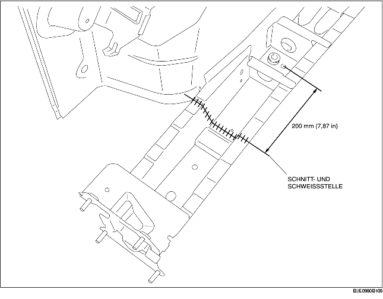

1. Neues und vorhandene Teile an der Schnitt- und Schweißstelle schneiden und die Kanten abschrägen.
2. Um das neue Teil zu schneiden und anzuschweißen, an den in der Abbildung unten illustrierten Stellen schneiden und die Schnitt- und Schweißstelle des neuen Teils abschrägen.
3. Beim Einbau neuer Teile, zuerst die neuen und vorhandenen Teile probeweise einbauen und danach das Chassis entsprechend der Standardabmessungen messen und einstellen.
4. Nach der provisorischen Befestigung der neuen Teile sicherstellen, dass die zugehörigen Teile richtig passen.
